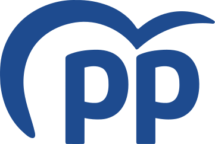
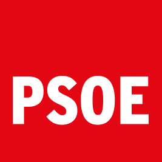
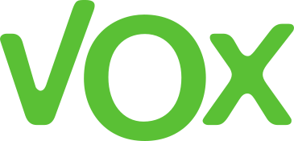
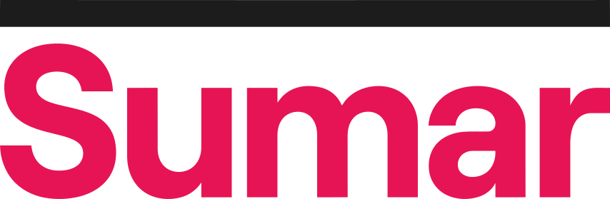
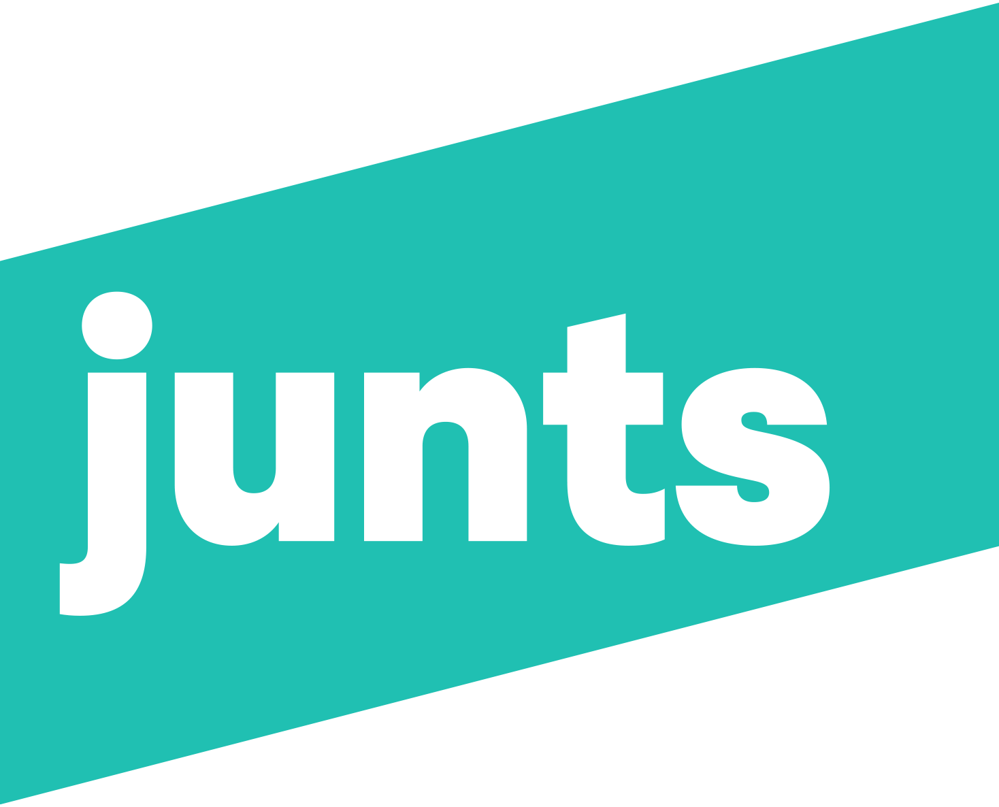
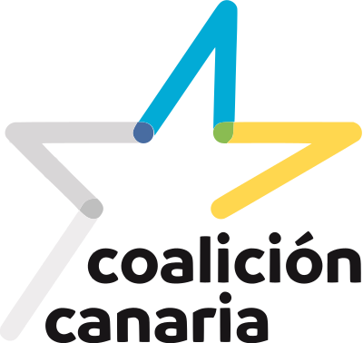
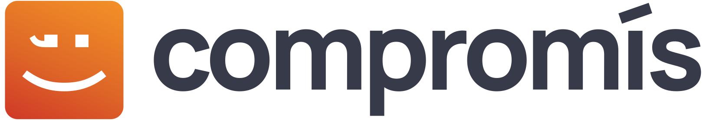
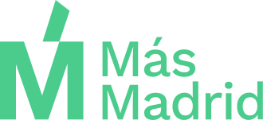

Origen de los logotipos
Identificación informativa de las referencias del test. Los emblemas no implican respaldo a esta aplicación ni acreditan una candidatura electoral actual. Originales o miniaturas proporcionadas por Wikimedia, sin modificar colores ni geometría, descargados el 3 de noviembre de 2026.

PP
Autoría: es:Partido Popular · Licencia indicada: Public domain
Ficha del archivo y condiciones de uso
PSOE
Autoría: Trademarked by PghipSOE. This file, by Rastrojo •Rastrojo · Licencia indicada: Public domain
Ficha del archivo y condiciones de uso
VOX
Autoría: VOX · Licencia indicada: Public domain
Ficha del archivo y condiciones de uso
Sumar
Autoría: Sumar · Licencia indicada: Public domain
Ficha del archivo y condiciones de usoPodemos
Autoría: Podemos · Licencia indicada: Public domain
Ficha del archivo y condiciones de usoERC
Autoría: Esquerra Republicana de Catalunya · Licencia indicada: Public domain
Ficha del archivo y condiciones de uso
Junts
Autoría: Junts per Catalunya · Licencia indicada: Public domain
Ficha del archivo y condiciones de usoPNV
Autoría: Euzko Alderdi Jeltzalea-Partido Nacionalista Vasco · Licencia indicada: Public domain
Ficha del archivo y condiciones de usoBildu
Autoría: EH Bildu · Licencia indicada: Public domain
Ficha del archivo y condiciones de uso
BNG
Autoría: Bloque Nacionalista Galego · Licencia indicada: Public domain
Ficha del archivo y condiciones de uso
CC
Autoría: Coalición Canaria · Licencia indicada: Public domain
Ficha del archivo y condiciones de usoUPN
Autoría: Fer1997 · Licencia indicada: Public domain
Ficha del archivo y condiciones de usoPACMA
Autoría: Partido Animalista Con el Medio Ambiente · Licencia indicada: CC BY-SA 4.0
Ficha del archivo y condiciones de uso
Compromís
Autoría: Compromís · Licencia indicada: Public domain
Ficha del archivo y condiciones de uso
Más Madrid
Autoría: Más Madrid · Licencia indicada: Public domain
Ficha del archivo y condiciones de usoPCTE
Autoría: PCTE · Licencia indicada: Public domain
Ficha del archivo y condiciones de usoAdelante Andalucía
Autoría: Adelante Andalucía · Licencia indicada: Public domain
Ficha del archivo y condiciones de usoNueva Canarias-BC
Autoría: Nueva Canarias-Bloque Canarista · Licencia indicada: Public domain
Ficha del archivo y condiciones de usoCiudadanos
Autoría: Ciudadanos-Partido de la Ciudadanía · Licencia indicada: Public domain
Ficha del archivo y condiciones de uso
.svg){kind=link}


.svg){kind=link}


.svg){kind=link}